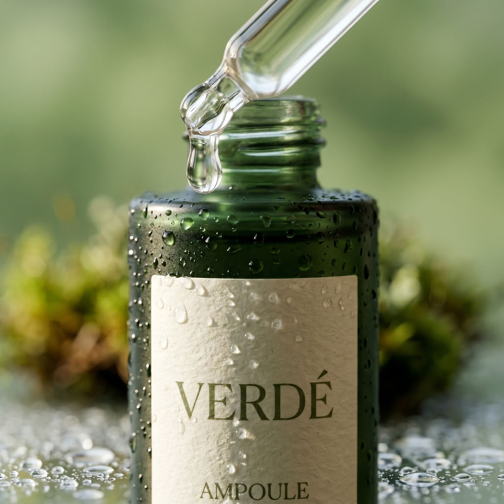
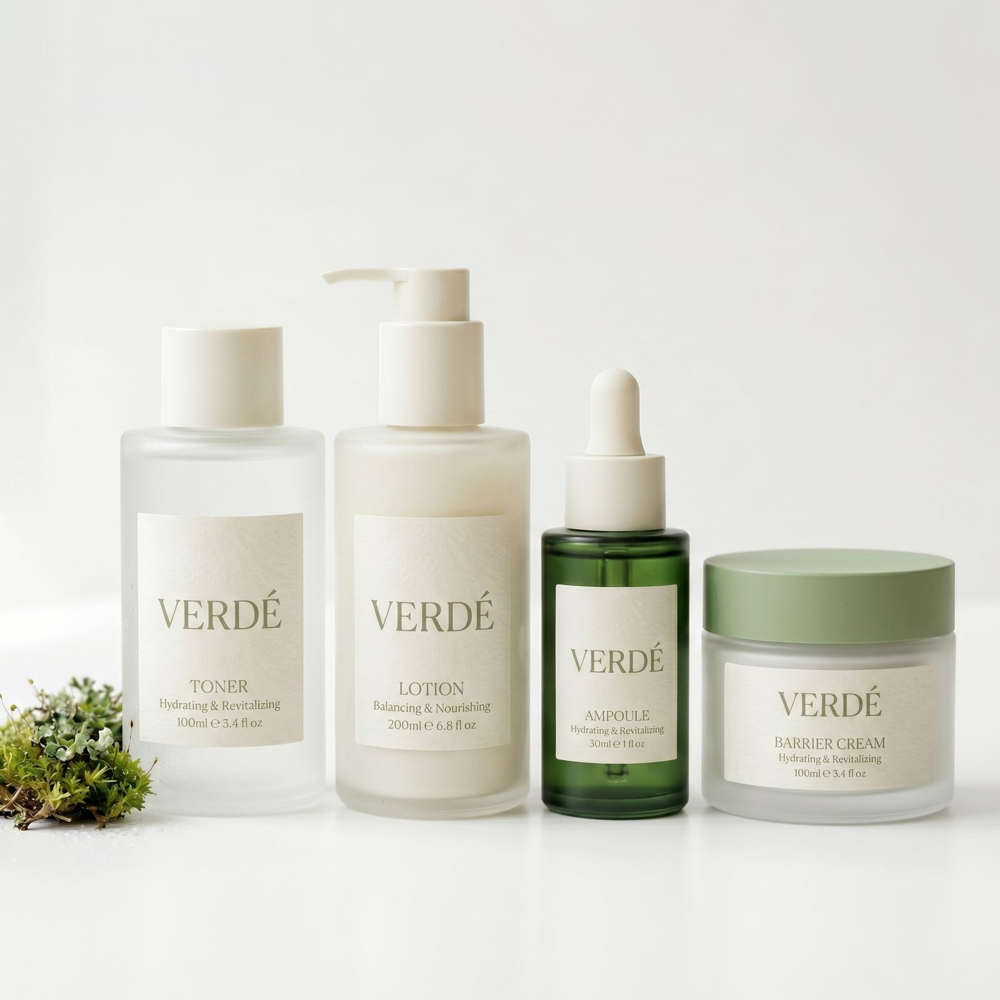

Journal
VERDÉ의 성분 연구, 브랜드 세계관, 그리고 고객들과 함께 만든 이야기를 매거진 형식으로 전합니다.

수많은 진정 성분 중에서도 VERDÉ가 병풀을 핵심 성분으로 선택한 이유. 오랜 시간 상처 회복에 사용되어온 병풀의 역사와, 민감성 피부에서의 임상적 의미를 짚어봅니다.
VERDÉ라는 이름의 시작이 된 숲의 회복 과정. 산불 이후에도 다시 푸르러지는 숲의 순환에서 브랜드 철학이 출발했습니다.

프로비타민 B5로 알려진 판테놀이 피부 장벽 회복에 어떻게 작용하는지 살펴봅니다.

인스타그램 해시태그 이벤트에 참여한 고객들의 데일리 루틴을 모아봤습니다.

오프라인 팝업스토어에서 진행된 리필 스테이션 운영기와 그곳에서 만난 이야기.

자외선과 냉방으로 예민해지기 쉬운 여름철 피부를 위한 성분 조합을 소개합니다.

1:1 문의로 가장 많이 들어온 질문과 답변을 모아 정리했습니다.

새싹에서 캐노피가 되기까지, VERDÉ 멤버십 등급에 담긴 의미를 소개합니다.